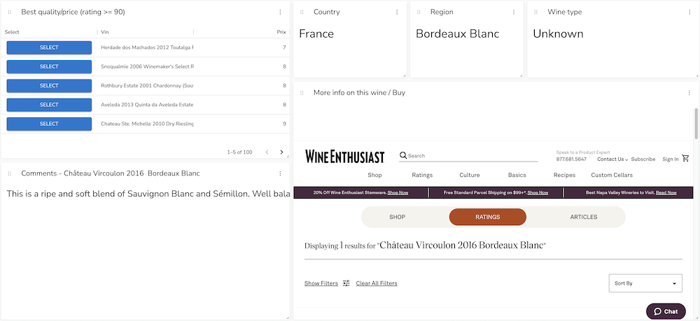
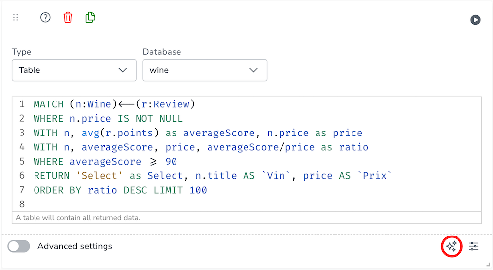
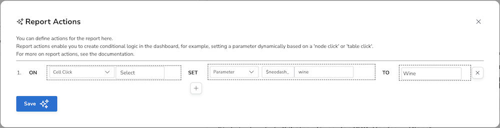

Report Actions
|
This documentation pertains to the (legacy) unsupported version of NeoDash. For users of the supported NeoDash offering, refer to NeoDash commercial. |
Report actions let dashboard builders add interactivity into dashboards. Actions can be used to achieve:
-
Cross-report filtering.
-
Using the output of one report in another report.
-
Providing users with more parameterized control beyond parameter selectors.
The image below displays an example of two reports interacting using report actions:
-
An action is defined for the table: If a user clicks on a row in the Customer column, set the parameter
$neodash_customer_nametorow.Customer. -
The graph visualization uses the parameter
$neodash_customer_nameto select a specific node. The graph is automatically updated when the user clicks on a row entry inside the table.

Configuration
First, ensure that the extension is enabled. Then, to create a Report Action, open up the report settings, Then, click the 'Report Action' button on the bottom right (marked with the red circle):

This will open up the rule definition window. Inside this screen, a list of rules can be defined. An unlimited number of rules can be defined, and based on the visualization, different actions can be specified. Each rule will have the following structure:
IF [CONDITION] SET [OBJECT] TO [VALUE]
